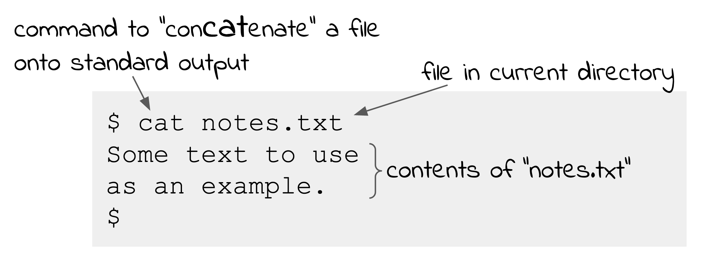

shell.1 The BASH Shell¶
The best way to learn a new technology is to learn-by-doing! So if you are new to Unix and the shell
I strongly suggest that you get access to a command line environment and try commands as I show the examples.
If you are already using a Unix (Linux etc) system then you just start a command window. If you are using a Mac
then you also start a command window (open the Applications folder, then the Utilities folder and double click on Terminal).
If you are using Windows 10 then I suggest you install Windows Subsystem for Linux (just google “installing windows subsystem for linux”).
When the shell starts a program as a result of the user typing a command, it will collect the argument strings from the command line and pass them to the running program. It does this using one of the variants of the exec system call.
Processes in Unix all have the same layout in memory: code, global/static, heap, stack. When a process is started some information is placed on the stack by the Unix kernel that includes the arguments to the program and the environment variables. The program arguments are a simple array of strings that the running program can access via an address (or pointer) to the stack. The environment variables are a similar array of strings but they have a particular syntax:
NAME=string
Environment variables are used to hold information of use to programs and are managed by the shell.
To set the value of an environment variable you use the same syntax:
NAME=string
The name must start with a letter and can have numbers and a few of the punctuation characters like ‘_’ but doesn’t have to be all uppercase. There must be no space between the name and the equals (=) sign, and between the equals and the string. The following string can be anything up to the next newline, BUT if it contains any spaces or special characters you must enclose it in single quotes.
To access the value of the variable you prefix the name with a $ sign. When the shell interprets your command line it replaces the
$VARNAME with the contents of the variable before it passes the arguments to the program when it starts.
$ TESTVAR='Hello World!'
$ echo $TESTVAR
Hello World!
$
The command export VARIABLENAME is interpreted by the shell (rather than running an export program) and tells the shell that the
variable called VARIABLENAME should be placed into the environment of any program started by the shell.
There are usually many shell variables that have been exported and so available in any program run by the shell. These can contain any information
but typically are used to hold system information that may be of use to programs. The program env is a very simple program that displays all
variables currently in the environment and exported by the shell.
$ env
TERM=xterm-256color
SHELL=/bin/bash
USER=bob
PATH=.....a sequence of directory names....
LANG=en_AU.UTF-8
HOME=/Users/bobkummerfeld
$
This is an edited example showing a few of the many variables in the environment. If you have a Unix/Linux system you could try the env command
on your system to see what variables are in your environment.
The SHELL variable is showing the file name of the shell program. USER is the login name of the current user. HOME conatins the home directory of the logged in user. The LANG variable is the current character coding in use. The TERM variable indicates the type of terminal emulation in use. This determines the particular control character sequences that can used to manage the current command line display.
The PATH variable contains a list of directories, separated by the colon (:) character. These directories are searched by the shell when it looks for a program corresponding to the command that has been typed.
Commands are (mainly) programs¶
The shell interprets the commands typed by the user and interprets some of them directly, but most of the commands you type to the shell are actually separate programs. The shell looks in the directories in the PATH variable when searching for a program and since you can change the PATH variable you can get the shell to run your own programs. You can also given an explicit full path name for the program you want to run.
Some commands are interpreted by the shell itself for efficiency reasons. For example, the echo command I show in earlier examples is implemented
as a separate program but since it is very simple some shells implement it directly inside the shell.
Other commands that are interpreted directly are done this way because it is the only way they can be implemented.
The best example of this type of command is cd which changes the current directory.
The shell has a concept of the “current directory” to save having to use the full pathname for files. The current directory is assumed whenever you specify a file name without any slashes, ie a single node in the namespace.
{kind=link}
You can find out the name of the current directory using the pwd (Print Working Directory) command.
$ pwd
/Users/bobkummerfeld/Examples
$
You can change to another directory with the cd (Change Directory) command.
$ cd Commands
$ pwd
/Users/bobkummerfeld/Examples/Commands
$ cd /Users/bobkummerfeld
$ pwd
/Users/bobkummerfeld
$
To avoid having to use full pathnames (eg /Users/bobkummerfeld) to navigate around the namespace, the shell
provides some shorthand codes:
Code |
Meaning |
|---|---|
|
the current directory |
|
the parent directory |
|
the home directory for the user |
The previous example could then be written as:
$ cd Commands
$ pwd
/Users/bobkummerfeld/Examples/Commands
$ cd ../..
$ pwd
/Users/bobkummerfeld
$
This uses the .. twice - the parent directory of the parent directory.
$ cd Commands
$ pwd
/Users/bobkummerfeld/Examples/Commands
$ cd ~
$ pwd
/Users/bobkummerfeld
$
This example uses ~ to indicate the home directory.
A home directory is assigned to each user and is the branch of the namespace
that the logged in user can use for their files.